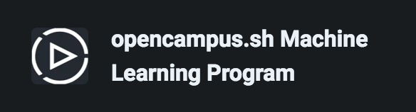

Deep Learning
from ScratchCourse
Offered by Opencampus.sh
Opencampus.sh

EDU @ Opencampus.sh

The Machine Learning Program
WHO AM I?
WHO ARE YOU
Overview
Neural Networks
The basics about neural network, how we can create our own, and why they can be so simple yet so powerful.Python
How to deal with vector and matrices in python. Vectorization is an extremely useful resource, that can be used also outside of python.Shallow or Deep?
What is meant for shallow or deep neural network, what are the differences, and when they make sense.Hyperparameters
The magic part about neural networks, how to tune the parameters and choose optimizations algorithms.Structuring a machine learning project
How to get your project working and how to improve it.Your own project
Start to get hand-on experience and do your own project.Starting a Project
Finishing a Project
Present your Project
Goals
- Have fun or at least enjoy the course
- Participate in the discussion
- Make some errors
- Learn something
- Manage to get a project working
Structure
Which tools do we use?
- Course material in Coursera
- Online session on Zoom
- Communication through Mattermost Chat
- Resources are available in our Gitbook

Coursera Courses
We will follow these 3 courses:Python Notebooks
Google Colab
Tutorial with Python — Tips, Tricks, and FAQ
Zoom Sessions
How we discuss in small groups?
Zoom has the possibility to create breakout rooms.This means every person will be automatically assigned to a smaller room where you can freely discuss.
I will try to go around the rooms to help, but I also believe it's nice to encourage discussion between yourself without supervision
At the end of the time, you will automatically return back to the group call and we will discuss together about it.
During the week
Refer to the Gitbook for material and links.
Ask and answer questions in the Deep Learning Channel in the Mattermost Chat
If you did not join the channel, please do or write me and I will add you.
Feel free to contact me anytime on Mattermost or at: luca@opencampus.sh
For the next week
- Register to the the Mattermost Chat (general link to register),
- Write a small presentation in the Course channel (specific link channel), if you did not yet,
- Register on Coursera and start the Neural Networks and Deep Learning course,
- Finish the first 2 weeks of the course
- Do the Programming Assignment on Logistic Regression
- Do the Programming Assignment on Python Numpy